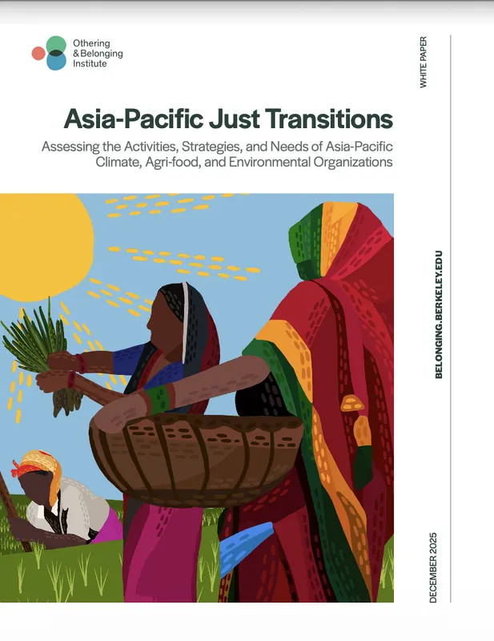
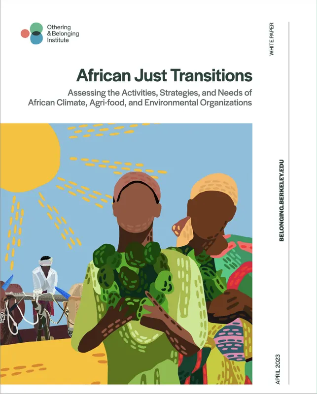
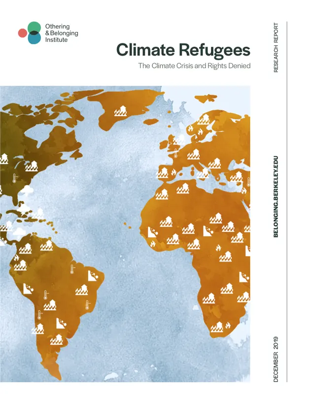
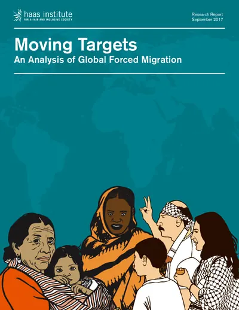
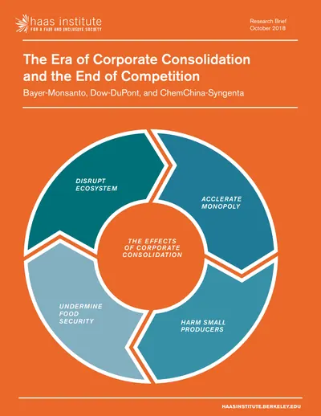
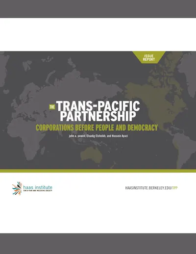
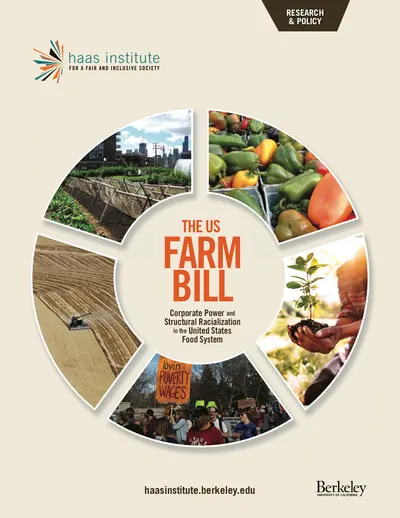
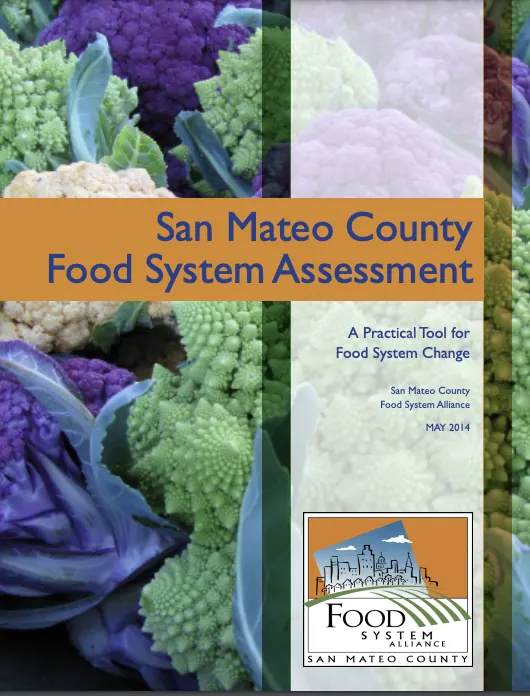

Research, Publications, Media
My research examines how political and economic institutions shape relationships among land, labor, agriculture, food, mobility, and the environment, and how these relationships are contested and transformed across different historical and political contexts. Drawing on political economy, critical approaches to law and policy, and interdisciplinary scholarship, I study the structural forces that produce inequality, dispossession, and environmental vulnerability, as well as the movements, institutions, and alternative political projects that seek to transform them.
Across my research, publications, and public-facing work, I connect critical scholarship with applied research that can inform public policy, strengthen community and movement strategies, and contribute to more just social, economic, and environmental futures.
Climate Change, Displacement & Migration
My work on climate and mobility examines how displacement and migration are shaped by environmental hazards, and by housing, infrastructure, labor markets, governance, and longstanding inequalities. I am particularly interested in the conditions that shape people’s ability to remain, move, return, and rebuild.
- Ayazi, Hossein and Betsy Popkin (Coordinating Lead Authors), “Climate-Induced Human Displacement & Migration,” California Fifth Climate Assessment, Topical Synthesis Report. Sacramento, CA: California Governor’s Office of Land Use and Climate Innovation, 2026.
- Negrón, R., David Hernández, Hossein Ayazi, et al. “Critical Approaches to Climate Migration Research and Solutions,” Local Environment: International Journal of Justice and Sustainability, 2024.
- Ayazi, Hossein, “Climate Displacement and Resilience Database.” Berkeley, CA: Othering & Belonging Institute, 2023–Present.
- Ayazi, Hossein and Elsadig Elsheikh. “Climate Refugees: Facts, Findings, and Strategies for ‘Loss and Damage.’” Berkeley, CA: Othering & Belonging Institute, 2023.
- Ayazi, Hossein and Elsadig Elsheikh. “Climate Refugees: The Climate Crisis and Rights Denied.” Berkeley, CA: Othering & Belonging Institute, 2019.
- Elsheikh, Elsadig and Hossein Ayazi. “Moving Targets: An Analysis of Global Forced Migration.” Berkeley, CA: Othering & Belonging Institute, 2017.
- Ayazi, Hossein. “Global Forced Migration and the Entanglements of Race, State Power, Capitalism and Environmental Change.” The Berkeley Blog, September 28, 2017.
Land, Agrarian Change & Food Systems
My research on land and agrarian change examines how property, agriculture, labor, and food systems are shaped by racial capitalism, state policy, and competing visions of development. This work also considers struggles over land reform, stewardship, food sovereignty, and alternative agrarian futures.
- Ayazi, Hossein, Verdant Empire: Race and Rural Economies of Containment, book manuscript invited by Duke University Press.
- Ayazi, Hossein, “Belonging From the Ground Up: Toward a Land-Centered Framework for Belonging Research.” In Handbook of Belonging Research, forthcoming.
- Ayazi, Hossein, “‘So God Made a Farmer’: The US Agrarian Imaginary and the Lived Assemblages of Settlement and Empire,” Comparative American Studies: An International Journal, 2019.
- Ayazi, Hossein and Elsadig Elsheikh. “The U.S. Farm Bill: Corporate Power and Structural Racialization in the United States Food System.” Berkeley, CA: Othering & Belonging Institute, 2015.
- Ayazi, Hossein, “Can Eating the Food of the Cultural ‘Other’ Constitute a Meaningful Cross-cultural Experience?” Invited Response. Aeon, July 20, 2015.
- Ayazi, Hossein, “San Mateo County Food System Assessment: A Practical Tool for Food System Change,” San Mateo County Food System Alliance, 2014.
Global Political Economy & Just Transitions
This work examines how global economic structures, state and corporate power, and uneven patterns of development shape environmental and social change. I am especially interested in how movements and institutions across the Global South are defining and pursuing just transitions on their own terms.
- Elsadig Elsheikh, Hossein Ayazi, and Basima Sisemore, “Asia-Pacific Just Transitions: Assessing the Activities, Strategies, and Needs of Asia-Pacific Climate, Agri-food, and Environmental Organizations.” Berkeley, CA: Othering & Belonging Institute, 2025.
- Ayazi, Hossein, Dimitri Diagne, Elsadig Elsheikh, and Basima Sisemore, “African Just Transitions: Assessing the Activities, Strategies, and Needs of African Climate, Agri-food, and Environmental Organizations.” Berkeley, CA: Othering & Belonging Institute, 2023.
- Ayazi, Hossein, “We Can't Have Climate Justice Without Global Justice: US Energy Policy and the Inflation Reduction Act in Perspective.” Othering & Belonging Institute, August 29, 2022.
- Ayazi, Hossein and Elsadig Elsheikh. “Fighting Poverty with SNAP: Reassessing the Toolkit for a Unified Movement for Economic Justice.” Berkeley, CA: Othering & Belonging Institute, 2021.
- Elsheikh, Elsadig and Hossein Ayazi. “The Era of Corporate Consolidation and the End of Competition: Bayer-Monsanto, Dow-DuPont, and ChemChina-Syngenta.” Berkeley, CA: Othering & Belonging Institute, 2018.
- powell, john a., Elsadig Elsheikh, and Hossein Ayazi. “The Trans-Pacific Partnership: Corporations Before People and Democracy.” Berkeley, CA: Othering & Belonging Institute, 2016.
Race, Colonialism & Transformative Politics
Across this work, I examine how racial and colonial formations are reproduced through political, economic, and institutional arrangements, and how they are challenged through collective struggle. My research is particularly attentive to anticolonial, anticapitalist, and internationalist traditions and to efforts to build alternative political and social arrangements.
- Ayazi, Hossein, “Pedagogies of International Development: Managing Black Nationalism and U.S. Racial Capitalism.” In The Gospel of Work and Money: A Global History of Industrial Education, eds. Karine Walther and Oliver Charbonneau, 2026.
- Liberato-Mercedes, Keon, Anndretta Lyle Wilson, Martin Smith, Nicholas L. Baham III, and Hossein Ayazi, “Class, Labor and Racial Capitalism.” In Introduction to Comparative Ethnic Studies: Love, Knowledge, Revolution, 2026.
- Ayazi, Hossein, “Land Reform, Race Reform: Interwar Anticommunism and U.S. Racial Capitalism,” Environment and Planning D: Society and Space, 2022.
- Ayazi, Hossein, “Modern Liberalism and its Fictions.” Book review of Lisa Lowe’s The Intimacies of Four Continents. Qui Parle, 2016.

Asia-Pacific Just Transitions
African Just Transitions
Climate Refugees
Moving Targets
The Era of Corporate Consolidation
The Trans-Pacific Partnership
The U.S. Farm Bill
San Mateo County Food System AssessmentMedia Appearances
- Ayazi, Hossein, “Climate Displacement and Resilience,” TV and Radio Interview, A Rude Awakening with Sabrina Jacobs, KPFA, 2023. Listen
- Ayazi, Hossein, “Climate Refugees: Climate-Fueled Drought, Sea Level Rise, Storms & Fires Displace Millions Worldwide,” TV and Radio Interview, Democracy Now!, 2019. Watch
- Ayazi, Hossein, “Racist U.S. Farm Bill?” Radio Interview, WORT 89.9 FM Community Radio, Madison, WI, 2015. Listen